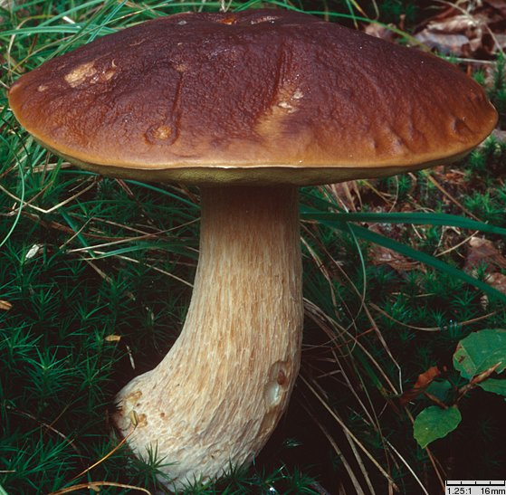
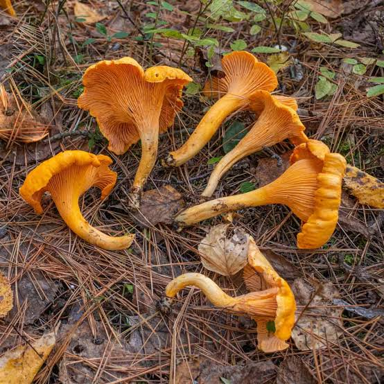

Witamy w Świecie Grzybów!
Grzyby to pasja, przygoda i sposób na odkrywanie natury. Niezależnie od tego, czy jesteś doświadczonym grzybiarzem, czy dopiero zaczynasz swoją przygodę, znajdziesz tu coś dla siebie! Nasza strona powstała z myślą o wszystkich, którzy kochają las, grzybobranie i smaczne potrawy z grzybów.
Poznaj tajniki zbierania grzybów, odkryj przepisy na aromatyczne potrawy i poszerz swoją wiedzę o gatunkach jadalnych, niejadalnych i trujących.
Atlas Grzybów
Odkryj grzyby jadalne, niejadalne i trujące
W naszym atlasie znajdziesz różne gatunki grzybów występujące w Polsce i Europie. Każdy opis zawiera szczegółowe informacje o wyglądzie i cechach charakterystycznych grzybów.
Przykładowe grzyby z atlasu:
-
Maślak zwyczajny (Suillus luteus)
Kapelusz ciemnobrązowy, czekoladowobrązowy, rzadziej jaśniejszy, żółtobrązowy; średnicy (40)50 - (100)150 mm, początkowo półkulisty, potem wypukły do rozpostartego, grubomięsisty; powierzchnia gładka, silnie śluzowata, wyschnięta jedwabiście, matowo-błyszcząca, z promieniście ułożonymi brązowymi włókienkami; brzeg ostry. Trzon żółtawy; 40-70(100) x 10-20 mm, cylindryczny lub nieco rozszerzony ku podstawie; z wyraźnym pierścieniem, pierścień zwisający, białawy, potem fioletowawy; nad pierścieniem z brązowawymi ziarenkowatymi cętkami, poniżej jaśniejszy, białożółtawy i też cętkowany.

-
Borowik Szlachetny (Boletus edulis)
Król lasów i ulubieniec grzybiarzy. Doskonały do suszenia, marynowania i jako dodatek do zup oraz sosów. Kapelusz typowo brązowy (zdarzają się egzemplarze jasnobrązowe i ciemnobrązowe), z wiekiem przeważnie ciemnieje do ciemnobrązowego, czerwonobrązowego, brzeg kapelusza może być jaśniejszy, podobnie owocniki przykryte ściółką mogą być bardzo jasne; (60)80 - 200(250)mm średnicy, najpierw półkulisty, potem wypukły, u starych egzemplarzy poduszkowato rozpostarty; powierzchnia gładka lub pomarszczona ale nie zamszowa; u młodych owocników i przy wilgotnej pogodzie nieco lepka.
 -
Kurka (Cantharellus cibarius)
Kapelusz 10-100(120) mm; żółty, jasnożółty do pomarańczowożółtego; kapelusz początkowo jest guzkowaty, później wypukły z podwiniętym brzegiem a u starszych okazów rozpostarty, wreszcie niemal lejkowaty; brzeg z wiekiem falisty, klapowany; powierzchnia kapelusza gładka, matowa. Listewki barwy kapelusza, wyraźnie wykształcone, grube, nieregularnie widlasto rozgałęzione, często poprzecznie ze sobą połączone - jest to szczególnie widoczne u starych egzemplarzach; daleko zbiegające na trzon. Miąższ biały do bladożółtego; zwarty, łamliwy, w trzonie włóknisty. Zapach miły, owocowy, korzenny, może przypominać pieprz. Smak łagodny, kwaskowaty do ostrawego.
 -
Pieczarka łąkowa (Agaricus campestris)
Kapelusz biały, stary z brązowym odcieniem; 50-120 mm średnicy, początkowo półkulisty, z wiekiem wypukły i w końcu rozpostarty; brzeg długo podwinięty, młody ze zwieszającymi się fragmentami osłony; powierzchnia gładka i lśniąca, satynowa, z wiekiem czasem słabo spękana na drobne, przylegające nieco szarzejące lub szarobrązowe łuseczki. Miejsca uciśnięte nie żółkną lub jedynie nieznacznie. Trzon biały, brązowiejący z wiekiem; 50-80 × 10-25 mm, cylindryczny, u podstawy nieco zwężony lub zaostrzony, nie dłuższy lub nieznacznie dłuższy niż średnica kapelusza; powierzchnia włóknista do drobno kłaczkowatej. Pierścień błoniasty, zwisający, słaby, delikatny, zanikający.

-
Koźlarz czerwony (Leccinum aurantiacum)
Kapelusz czerwonobrązowy, jaskrawy rdzawobrązowy do ceglastoczerwonego; 60-150(200) mm średnicy, początkowo półkulisty, z wiekiem wypukły, poduchowaty; powierzchnia sucha, matowa, aksamitna, z wiekiem bardziej naga, nieco lepka gdy wilgotna; skórka wyraźnie wystaje poza rurki. Trzon z łuseczkami początkowo białawymi, z wiekiem pomarańczowymi i czerwonobrązowymi do czarniawych, u szczytu trzonu długo pozostają białe; łuseczki na białym tle, u postawy czasem przebarwionym niebiesko; 60-120(150) x 15-40 mm, równogruby lub rozszerzający się ku podstawie.

-
Podgrzyb brunatny (Imleria badia)
Kapelusz ciemnobrązowy, kasztanowobrązowy, z wiekiem jaśniejszy płowobrązowy; (30)50 - 100(150) mm średnicy, wypukły, z wiekiem rozpostarty; powierzchnia wilgotna śluzowata, gdy sucha to matowa, zamszowa. Trzon z zasadniczym kolorem jasnożółtobrązowym, na jego tle ciemniejsze, ochrowo-brązowawe, podłużne włókienka; bez siateczki; 30-90(120) x 10-30(50) mm, równogruby lub zwężony ku podstawie, często wygięty; pełny.

-
Pieprznik trąbkowy (Cantharellus tubaeformis)
Kapelusz żółtobrązowy do szarobrązowego (czarnoszarego), oliwkowo-szaro-brązowawy, rdzawoszary; 20-40(60) mm średnicy, początkowo wypukły, szybko wgłębiony, potem często lejkowaty, następnie trąbkowaty; cienkomięsisty; powierzchnia z drobnymi przylegającymi ciemniejszymi łuseczkami; początkowo brzeg podgięty i równy, z wiekiem silnie pofałdowany (falisty, płatowaty, kędzierzawy). Trzon szarożółty (żółtawobrunatny), ku podstawie żółtawy; 20-60(80) x 5-10 mm, ku podstawie zwężony; gładki lub bocznie spłaszczony, z bruzdowatymi zagłębieniami.

-
Lisówka pomarańczowa (Hygrophoropsis aurantiaca)
Kapelusz zmiennej barwy, pomarańczowożółty do pomarańczowego, różowopomarańczowego, także znacznie bledszy; powierzchnia sucha, filcowato-zamszowa, matowa; młody nieco wypukły, płaski, potem wklęsły, prawie lejkowaty; 25-70 mm średnicy; brzeg początkowo podwinięty. Trzon podobnej barwy, nieco bledszy, u podstawy białawy; dość cienki, 30-50 x 3-10 mm, równogruby, nieco rozszerzony ku górze i z pogrubioną podstawą; pełny, czasem nieco ekscentryczny.

-
Muchomor zielonawy (Amanita phalloides)
Śmiertelnie trujący.
Dawką śmiertelną jest już jeden średni okaz, śmiercią może się skończyć zjedzenie ledwo 30 - 50 g grzyba. Trujący składnik, amanityna jest oligopeptydem. Powoduje uszkodzenia komórek. Przyczyną śmierci jest zazwyczaj niewydolność wątroby po jej uszkodzeniu. Trucizna nie jest rozkładana podczas przetwarzania (gotowania, smażenia, suszenia itd.).